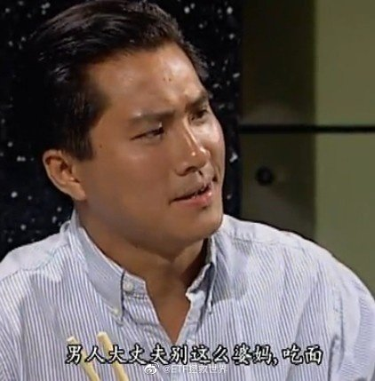

现在知道我为什么提出这个疑问了吗。当时我不敢明说，怕被锤。我也再次希望大家以后看到无论什么样的新闻，能够冷静的分析一下。当然，从人类这个整体来说，是不可能冷静的。@ETF拯救世界:最近突然有个疑问：男女约P或者甚至是男女朋友，双方发生关系后，女方突然说非自愿，是被胁迫，那么男方如何自证清白。
有些品种，比如美股，比如消费，虽然都买了，也都赚了，但仓位小，下车早，没赚到太多，这些就是一定意义上的“做错”。我自然会总结经验，争取下次做得更好。这些品种没赚太多，我不会抱怨“市场错了”。也许未来看，确实市场太疯狂，也许真的会回归，但我没赚到就是没赚到，这是不可改变的事实。承认错误很难吗。对很多人来说，很难。对我来说一点都不难。承认错误是变得更强的第一步，这一步都做不到，人生也就那样了。努力能不能改变？能，就去努力改变。改变不了的，坦然接受。多好啊，每天都很开心呢。
很多人把说错“打脸”看的比命都重要。不好意思，我不这么认为。因为我已经发现、确认、并承认自己是个人。只要是人，就会出错。何况是在中短期几乎不可能预测的资本市场。所以说错就说错了呗。多大点事儿啊。不过我对一种错误非常看重，那就是“做错”。无论是自己的还是别人的，我都会认真研究，避免重蹈覆辙。同一个错误，第一次犯，完全可以原谅。第二次做错就证明自己不是个聪明人。第三次做错，证明自己不适合这个游戏，尽快退出才是王道。
有人说我短期蒙到了表现的太兴奋，人品不行。我想了想，他说的对。反手把他拉黑了。我自己的微博我一不犯法二不违规三严格遵守社区守则，愿意说什么就说什么，轮得到你来教我做人？宁是哪根葱？我要是怕“打脸”，我会每天明确的说自己的观点？我看好这个不看好那个，哈迪斯顶钻石坑一篇篇写出来，不就是让宁打脸的吗？您这样的看到别人说错了一两句话那种难以抑制的兴奋之情，我隔着网线和屏幕都感受到了呢。为了纪念这些被拉黑的喷子，今年过年我抽10位送罗技k780键盘。亲测只要你不做键盘侠，这个键盘就非常好用。